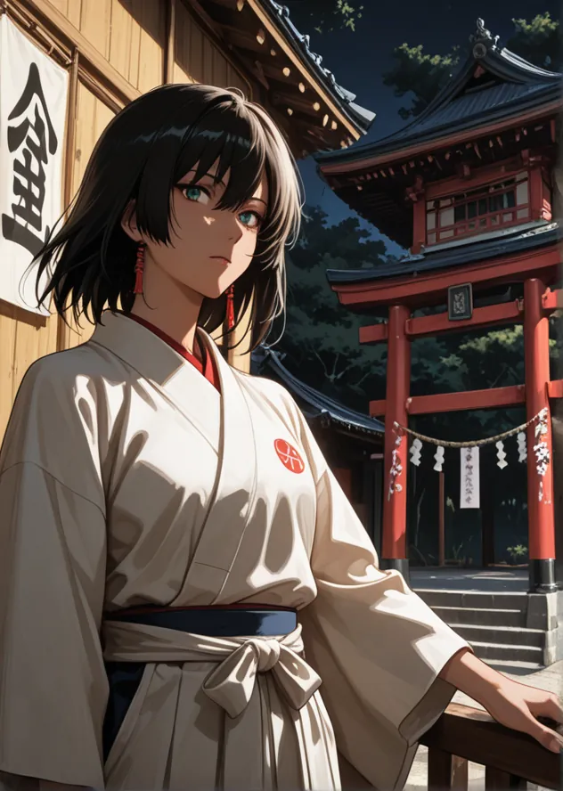

1. Implicación
Los jugadores se implican más y están más a gusto con su propia identidad.
Hay muchos trucos y enfoques diferentes para ser Master en un juego de rol, algunos puede que los sepas, otros no, pero aquí vamos a intentar ayudarte a nuestra manera, simplificando el control de la partida y de la creación de aventuras, y, sobre todo, personajes.
El Yosai es el centro de toda partida de Nakama, es donde se tienen las relaciones, las misiones, los parentescos. Es lo que da un sentido de crecimiento, porque es con quien se comparan los personajes, con sus superiores y compañeros de otros Nakamas. Haz tu propio Yosai que sea muy especial. No tengas miedo a cambiar los ejemplos que aquí damos, es muy importante que lo sientas tuyo y estés agusto con él. ¿Prefieres un Shogun Hayabusa (Halcón) en lugar de Washi (Aguila)? Adelante.
Tú no debes hacer todo el trabajo de crear un Yosai por dos motivos:
Los jugadores se implican más y están más a gusto con su propia identidad.
Es trabajo que te ahorras y puedes dedicar a otras cosas de la partida.
Pedirle a los jugadores que diseñen sus casas hasta donde puedan es muy interesante, porque de esta manera las conocen de antemano y saben qué pueden pedir y con quien pueden hablar. Además, pedirles que diseñen algún PNJ con un par de pinceladas crea un mayor trasfondo de la ciudad, porque mientras más PNJs existan, más viva está esta.
Si encima te mandan material como mapas o algún rumor interno del que ni ellos mismos estén seguros, mucho mejor.
Crea poderes como si fuesen jutsus, pero que solo se activen con dobles o triples. Así no tendrás que controlar el Ki, ni decidir cuando lanzan qué. Es el azar quien decide por ellos que hechizos tiran. Ahórrate las estadísticas de Poder y Control de Ki, y cuenta el coste en nivel de esos hechizos ×2. Utiliza esto para criaturas y PNJs, no para Personajes Jugadores.
No separes las habilidades, úsalas por grupos de Shisen, Kage o Reikon, con un coste de 5 PC por cada +1 en los grupos. Esto te permite crear más rápido personajes al vuelo.
Una de las cosas más útiles y que dan más vida es coger un jugador y llevartelo apartado del resto, y allí contarle cosas, o tener escenas individuales con otros PNJs. Hazlo poco, no abuses, pero hazlo para crear incertidumbre en el resto y secretos que guardar. Un Yosai sin secretos es un Yosai aburrido.
Cada ciertas partidas, intenta que uno de los personajes tenga una historia importante relacionada con su Kazoku y que el resto le ayuden a resolverlo. Esto hace crecer mucho los personajes, los hace más vivos y más importantes, y de paso da a conocer la casa que han creado al resto de jugadores de la partida.
Crea objetivos, no bolsas de vida: Los jugadores deberían tener un motivo claro al intentar derrotar enemigos. Defender algo, intentar evitar que el enemigo llegue a algún sitio, o que huya con información relevante. Recuerda que con algo tan sencillo como poner a alguien a quien defender, la estrategia de un combate cambia por completo.
Si un combate tiene lugar en un sitio con características especiales, como la bodega de un barco, con posibilidades de hundirse, poco espacio, y muchas cuerdas y barriles, será muy diferente a un claro de un bosque. Piensa siempre en sitios interesantes como un bosque de bambú, en el que es muy difícil atacar a distancia (+2 a la dificultad), en un campo lleno de barro resbaladizo y cadáveres, en el que es muy difícil atacar cuerpo a cuerpo (+2 a la dificultad).
Crea enemigos especiales, enemigos inmunes a Jutsus, enemigos solo vulnerables a Jutsus, enemigos que ven lo invisible, enemigos que vuelen...
Haz que los enemigos huyan. A veces se convierte en más peligroso que un enemigo huya que ataque. Si consigue informar de lo que ha pasado, es más peligroso que quitar un par de puntos más de vida a los personajes. Haz que los combates puedan derivar en persecuciones desesperadas.
Haz el combate descriptivo: Esto ya lo sabes, pero haz cosas que humillen a jugadores y les dé rabia, un corte en la cara, un cabezazo en la nariz, dejarles caer al suelo lleno de barro y mancharles... apela a su orgullo para hacer los combates más personales.
Haz que pasen cosas en combate: Crea sensación de urgencia provocando derrumbes en una cueva, que un barco se hunda, un incendio que se expande, haz la sensación de cuenta atrás y tener que terminar el combate, como sea, sea importante. Provoca ansiedad.
Al diseñar cosas, dobla las reglas, no te atengas a ellas, cógelas e invéntate cosas como un Koomori que se transforma en Murciélago Deforme Gigante, que ataque no solo a los personajes, sino a un poblado.
Con tirada de 1–2 que ataque casas o gente del pueblo, con un 3–6 que ataque personajes. Además, que solo pueda ser atacado cuerpo a cuerpo cuando ataca a un personaje, y solo por el que recibe el ataque. Esto obligará al grupo a buscar estrategias para combatirlo, como inmovilizarlo o congelarlo. ¿Alguien ha dicho usar cuerdas contra él? Permite la imaginación y el uso de recursos de forma inteligente, pídeles tiradas de ataque a distancia de dificultad 18 para atarlo, es difícil... pero no imposible.
Haz las pifias inolvidables, que duelan, que los dejen en una desventaja absoluta, que tiren por tierra lo que han preparado con mucho trabajo.
Cuando las pifias son realmente dolorosas, la historia se convierte en mucho más interesante. Es una dificultad más que tienen que solucionar los héroes, si la vida fuera fácil... serían aburridos.
Texto íntegro p.63–68, aquí en tarjetas jugables pero con frases literales del PDF.
